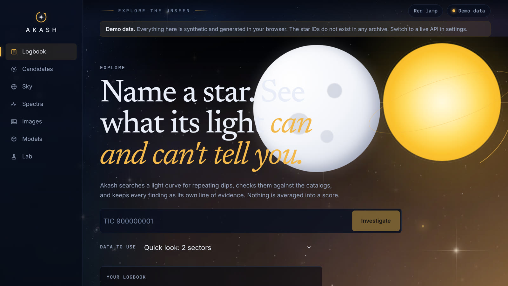
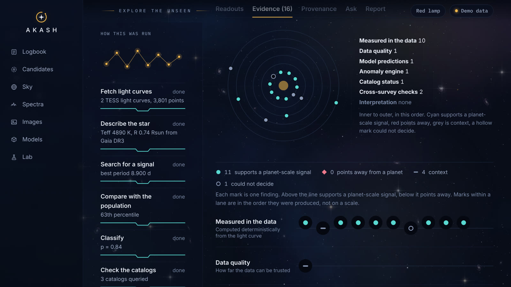
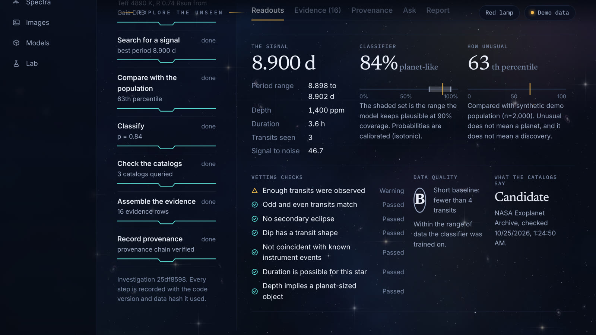
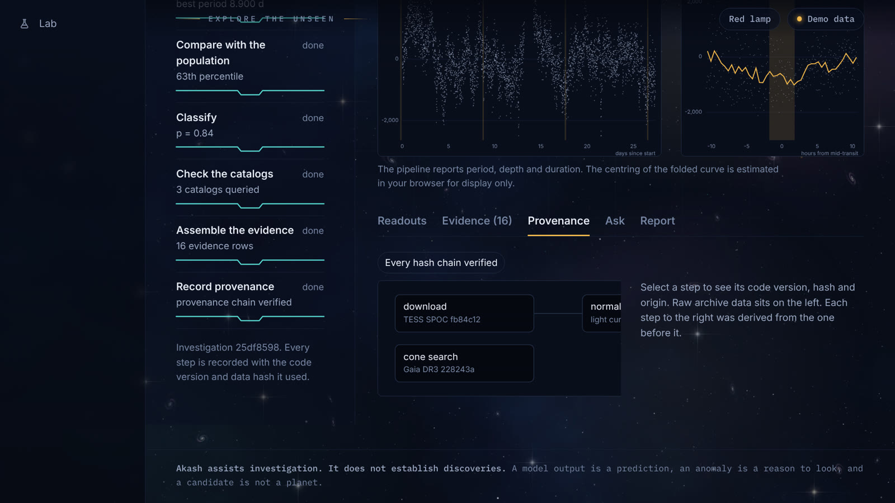
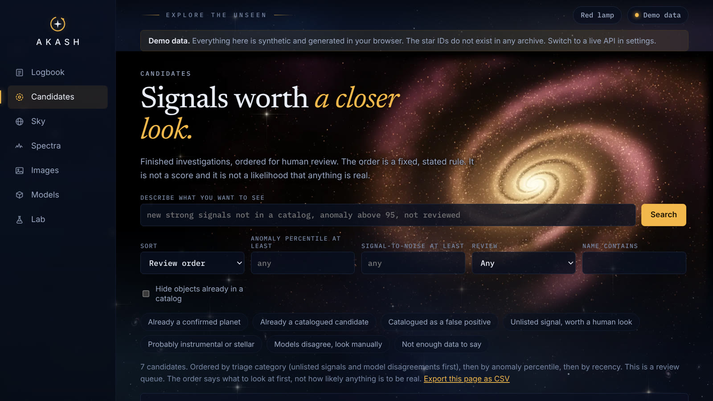

Investigate
Resolve a target by name, download real archive data, detrend light curves, and search for repeating transit-like dips.
AKASH resolves star targets, retrieves real TESS/Kepler light curves, and surfaces transit evidence with provenance, cross-survey checks, and explicit uncertainty — so every finding stays auditable instead of being collapsed into a single opaque score.

Resolve a target by name, download real archive data, detrend light curves, and search for repeating transit-like dips.
Classifier predictions, anomaly signals, catalog matches, and interpretation stay in separate channels rather than being merged into one magical score.
Follow transparent uncertainty, conformal sets, OOD flags, and provenance lineage from each step back to its source input.



